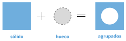

Agrupar formas y hacer agujeros
🤔 Pienso5 min
Qué hago aquí: Piensa un momento y contesta con lo que ya sabes. No pasa nada si no lo sabes: es para empezar.
¿Con qué formas harías un vaso? ¿Cómo harías el hueco de dentro?
✏️ Puedes responder escribiendo, con un dibujo o un esquema, o contándolo en voz alta.
📖 Leo y aprendo15 min
Qué hago aquí: Lee despacio, mira los dibujos y los ejemplos, y quédate con la idea clave del final.
En Tinkercad, una forma puede ser de dos tipos.
Para que un hueco haga el agujero, hay que agrupar: seleccionas las formas y pulsas Agrupar. Así se convierten en una sola pieza.
sólido + hueco → agrupar pieza con agujero

✏️ Hago25 min
Qué hago aquí: Haz las actividades en orden. Empieza siempre por las básicas.
Haz la arandela del ejemplo.
Selecciona la arandela y pulsa Desagrupar. ¿Qué pasa?
Haz un dado de 20 mm de lado. Hazle los puntos con esferas huecas.
Completa: al agrupar un sólido con un hueco, el hueco .
Haz un vaso de 40 mm de ancho y 50 mm de alto. Deja paredes de 2 mm. ¿Qué medidas tiene el hueco?
🚀 Amplío (si quieres saber más)
Qué hago aquí: ¿Has terminado? Lee la curiosidad o elige el reto. Es voluntario.
Haz un agujero a tu llavero para la anilla. Haz que las letras queden hundidas.
✅ Compruebo5 min
Qué hago aquí: Contesta sin mirar la ficha y marca cómo lo llevas.